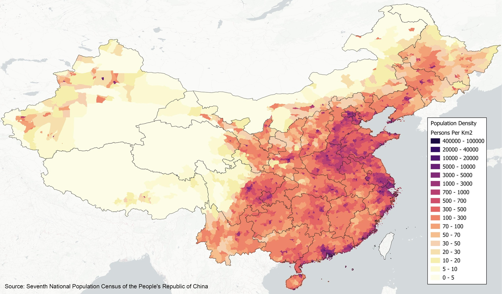

Verteilung der Bevölkerung in China 2025; Einwohnerzahl in den Landkreisen. Deutlich erkennbar ist der Umstand, dass in einem Bereich in Ostchina, der lediglich ein Drittel der Fläche umfasst, 94% der Bevölkerung leben.
Aufgaben
- 1. Beschreibe die physische Geographie Chinas (Relief) und stelle einen Zusammenhang zu Bevölkerungsdichte und wirtschaftlicher Nutzung her. Material: Diercke Weltatlas (2024), S.194/195 ("Ostasien: Physische Geographie")
- 2. Beschreibe (a) die landschaftliche Gliederung Chinas ("Naturraumpotenzial" bzw. "Naturraumanalyse"), (b) die damit zusammenhängende landwirtschaftliche Nutzung, (c) die Verfügbarkeit und Förderung von Bodenschätzen, (d) die Verteilung industrieller Produktion sowie (e) Schwerpunkte der Energieerzeugung. Material: Diercke Weltatlas (2024), S.196/197 ("Ostasien: Wirtschaft")